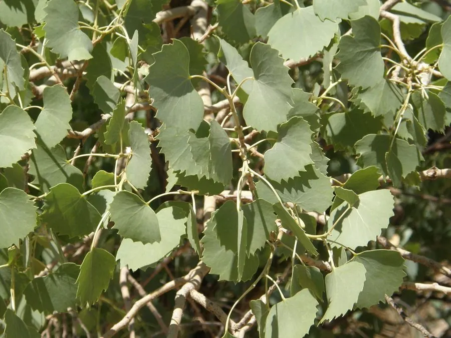

乔木 · 植物界
胡杨 Populus euphratica

中国西北荒漠河岸的珍稀落叶乔木，耐旱、耐盐碱，叶片有三种形状，被称为“沙漠英雄树”，有“生而千年不死”之说。
- 分类
- 门被子植物门纲木兰纲目杨柳目科杨柳科属杨属
- 栖息环境
- 荒漠河岸、绿洲边缘与盐碱滩地，靠地下水生存，耐旱耐盐碱
- 地理分布
- 中国新疆塔里木河流域、内蒙古额济纳旗及甘肃西部，中亚、蒙古也有分布
- 保护级别
- 暂无评估；新疆等地建立胡杨林自然保护区加以保护
物种志
胡杨为落叶乔木，高可达 15 m，树皮灰褐色、纵裂，老树干常扭曲；叶片形状多变，幼树与萌条上的叶为披针形，成年树上的叶为卵圆形或肾形，同一棵树上可见多种叶形，故又称“异叶杨”。雌雄异株，葇荑花序下垂，花期 4–5 月；蒴果长椭圆形，成熟后裂开，种子带白色绒毛，可随风传播。
胡杨分布于中亚、蒙古及中国新疆塔里木河、内蒙古额济纳等地，是荒漠河岸林的主要树种，耐干旱、耐盐碱、耐风沙，靠发达的根系吸收地下水，可在含盐量较高的土壤中生长。胡杨林是荒漠地区重要的生态屏障，为野生动物提供栖息地，也能防风固沙；木材可供建筑，树液可提取胡杨碱。民间有“生而千年不死，死而千年不倒，倒而千年不朽”的说法，胡杨因此成为坚韧精神的象征。
形态与习性
- 株高可达 15 m，胸径可达 1.5 m
- 花期4–5 月，葇荑花序下垂
- 果期7–8 月，种子带白色绒毛
- 光照极喜光，不耐荫
- 水分依赖地下水，极耐旱
- 土壤耐盐碱，可在含盐量 1% 以上的土壤生长
- 叶形幼叶披针形，老叶卵圆形或肾形
- 主要用途防风固沙、建筑用材、提取胡杨碱
趣味知识
- 胡杨同一棵树上可长出披针形、卵圆形、肾形等多种形状的叶片，因此又叫“异叶杨”。
- 胡杨根系可深达 10 m 以上，靠地下水在干旱荒漠中生存。
- “生而千年不死，死而千年不倒，倒而千年不朽”的说法，让胡杨成为坚韧的象征。
- 胡杨种子带白色绒毛，可随风飘散，在河岸湿润的沙地上萌发。